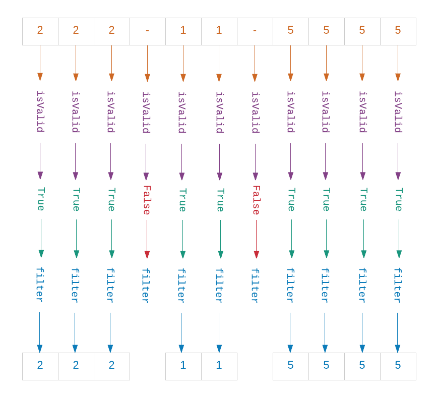
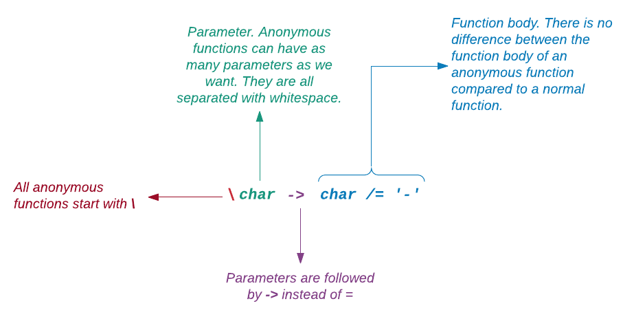

Stringy (řetězce) jsou v Elmu reprezentovány dvojitými uvozovkami:
> "Pretzels"
"Pretzels" : StringZnaky (characters) jsou reprezentovány jednoduchými uvozovkami:
> 'p'
'p' : CharLiterály znaků mohou obsahovat pouze jeden znak. Tyto výrazy jsou proto v Elmu neplatné: 'abc', ''. Řetězce mohou mít libovolný počet znaků.
Víceřádkové řetězce
Víceřádkové řetězce se tvoří označením """. Což je trojnásobný dvojitý apostrof. Takto vložíme víceřádkový řetězec v replu:
> """ \
| It became very clear to me sitting out there today \
| that every decision I've made in my entire life has \
| been wrong. My life is the complete "opposite" of \
| everything I want it to be. Every instinct I have, \
| in every aspect of life, be it something to wear, \
| something to eat - it's all been wrong. \
| """Při zápisu do souboru nemusíme vkládat znak \ na konce víceřádkového řetězce. Definujte konstantu zvanou revelation hned nad main v souboru Playground.elm.
revelation =
"""
It became very clear to me sitting out there today
that every decision I've made in my entire life has
been wrong. My life is the complete "opposite" of
everything I want it to be. Every instinct I have,
in every aspect of life, be it something to wear,
something to eat - it's all been wrong.
"""
main =
...Nyní zadejte konstantu revelation funkci Html.text ve funkci main.
main =
Html.text revelationObnovte stránku na http://localhost:8000/elm-examples/Playground.elm. Měli byste mít možnost poznat hluboké prozření George Costanzy, jež se mu dostalo za chmurného dne při pohledu na oceán.
Uvnitř víceřádkového řetězce můžeme používat jak jednoduché, tak dvojité apostrofy. Použití jednoduchých apostrofů uvnitř jednořádkového řetězce je prosté ale před dvojité apostrofy musíme vytknout znak \.
> "Michael Scott's Rabies Awareness \"Fun Run\" Race for the Cure"
"Michael Scott's Rabies Awareness \"Fun Run\" Race for the Cure"Zpětné lomítko \ říká Elmu, že následný dvojitý apostrof nemá končit řetězec. Podobně musí být předznamenán jednoduchý apostrof uvnitř znakového literálu.
> '\''
'\''Jak vytkneme (escape) zpětné lomítko samotné? Dalším zpětným lomítkem.
> '\\'
'\\'Určení délky
Pro určení délky řetězce můžeme použít funkci length z modulu String.
> String.length "Creed Bratton"
13
> String.length ""
0Až dosud jsme vytvářeli uživatelské funkce explicitní deklarací. Dále budeme často používat vestavěné funkce, jako je String.length, jež je součástí standardní knihovny Elmu.
- Standardní knihovna
- Většina programovacích jazyků používá standardní knihovny, což jsou kolekce funkcí a hodnot, povětšině psané v témže jazyku. Elm má rovněž svoji standardní knihovnu. Všechny funkce a hodnoty v této knihovně jsou seskupeny do tematických modulů podle typu dat, s nimiž operují. Například modul
Stringobsahuje funkce pro manipulaci s řetězci. Podobně modulListposkytuje funkce pro manipulaci se seznamy. V knihovně je mnoho dalších modulů pro práci s téměř všemi typy dat, například Dict, Set a Date, abychom jmenovali aspoň některé. Některé funkce, napříkladtoStringpracují s vícerými typy dat. Tyto generické funkce jsou v modulu Basics. -
Moduly jsou dále seskupeny do paketů (packages).
String,ListaBasicspatří všechny do paketu Core, jež je součástí kolekce Elm Platform. Do této platformy jsou zahrnuty jenom nejpodstatnější pakety. Další jsou dostupné v online katalogu.
Při spuštění seance v elm-repl, importuje se automaticky modul String. Jinak bychom jej museli explicitně importovat příkazem:
> import StringProstředí elm-repl automaticky načítá moduly, které jsou v Elmu nejvíce používané. Aplikovanou funkci je vhodné uvést za názvem modulu (zde prefixem) a to ze dvou důvodů:
-
prefix (název modulu) nám říká odkud funkce pochází.
-
prefix zabrání kolizím mezi funkcemi z různých modulů.
Chceme-li, můžeme explicitně jmenovat (expose) funkci v příkazu "import" (např. funkci length) abychom při jejím použití nemuseli prefix uvádět.
> import String exposing (length)
> length "Angela Martin"
13Čirou náhodou obsahuje modul List rovněž funkci length. Co se stane, když tuto funkci exponujeme (expose) také? Ověřte si to.
Seznam (list) je v Elmu datová struktura pro ukládání vícerých hodnot. Vytvoříme jej jejich výpisem do hranatých závorek, např. ["Titan", "Encaladus"]. O seznamech budeme hovořit podrobně později.
> import List exposing (length)
> length "Stanley Hudson"
------------- NAMING ERROR ------------------
This usage of variable `length` is ambiguous.
5| length "Stanley Hudson"
^^^^^^
Maybe you want one of the following?
List.length
String.lengthElm je zmaten. Neví, kterou funkci length jsme chtěli použít. Přidáme-li prefix, bude vše OK.
> String.length "Stanley Hudson"
14
> List.length [1, 2, 3, 4, 5]
5Ověřování prázdnoty
Modul String obsahuje funkci isEmpty, která nám řekne, zda je daný řetězec prázdný či nikoliv.
> String.isEmpty ""
True
> String.isEmpty "Kevin Malone"
FalseTuto i následující funkci výhodně použijeme v podmínkách, vyžadujících booleovu hodnotu True či False.
> String.length "Kevin Malone" == 0
FalseSpojování stringů
Ke spojení (concatenation) dvou řetězců se používá operátor ++.
> "These pretzels are " ++ "makin' me thirsty!"
"These pretzels are makin' me thirsty!"Operátory neuvádíme se jménem modulu.
Operátor ++ nelze použít ke spojení znaků nebo čísel. Obě ukázky generují chybu:
> 'p' ++ 'r' -- Error
> 42 ++ 10 -- ErrorSpojované znaky musíme nejprve konvertovat na řetězce. Můžeme k tomu použít funkci fromChar
> (String.fromChar 'p') ++ (String.fromChar 'r')
"pr"Dva řetězce můžeme také spojit pomocí funkce append.
> String.append "These pretzels are " "makin' me thirsty!"
"These pretzels are makin' me thirsty!"Funkce String.append je specielní případ operátoru ++, který spojuje dvě připojitelné entity dohromady, jako jsou řetězce a seznamy.
Spojení více řetězců
Operátorem ++ můžeme spojovat více než dva řetězce.
> "Bears. " ++ "Beats. " ++ "Battlestar Gallactica."
"Bears. Beats. Battlestar Gallactica."Technicky vzato, operátor ++ spojuje pouze dva řetězce. V naší ukázce nahoře aplikuje operátor ++ nejprve na "Bears. " a "Beats. ", což resultuje v "Bears. Beats. ". Potom aplikuje operátor ++ na "Battlestar Gallactica." coby druhý argument, což resultuje ve finální řetězec. Ke spojení více než dvou řetězců můžeme také použít funkci append, byť tento způsob je méně přehledný.
> String.append (String.append "Butter shave, " "Voice, ") "Serenity now"
"Butter shave, Voice, Serenity now"Dalším způsobem spojení více řetězců je použití funkce concat, což vyžaduje vložení jednotlivých stringů do seznamu.
> String.concat ["Bears. ", "Beats. ", "Battlestar Gallactica."]
"Bears. Beats. Battlestar Gallactica."Povšimněte si vkládaných mezer mezi slova a konce stringů. Působí to poněkud neohrabaně. Použijeme-li funkci join nemusíme to dělat.
> String.join " " ["Bears.", "Beats.", "Battlestar Gallactica."]
"Bears. Beats. Battlestar Gallactica."Funkce join má dva parametry :
-
separátor, který odděluje spojované řetězce,
-
seznam řetězců.
Separátorem může být cokoli.
> String.join "/" ["Bears.", "Beats.", "Battlestar Gallactica."]
"Bears./Beats./Battlestar Gallactica."
> String.join " thatswhatshesaid " ["Bears.", "Beats.", "Battlestar Gallactica."]
"Bears. thatswhatshesaid Beats. thatswhatshesaid Battlestar Gallactica."Dělení řetězce
K rozdělení řetězce na více části můžeme použít funkci split. Je to přesný opak funkce join.
> String.split " " "Bears. Beats. Battlestar Gallactica."
["Bears.","Beats.","Battlestar","Gallactica."]
> String.split "/" "Bears./Beats./Battlestar Gallactica."
["Bears.","Beats.","Battlestar Gallactica."]
> String.split " thatswhatshesaid " "Bears. thatswhatshesaid Beats. thatswhatshesaid Battlestar Gallactica."
["Bears.","Beats.","Battlestar Gallactica."]Všimli jste si, že když jsme dělili podle oddělovače " ", dostali jsme čtyři stringy, zatímco v dalších příkladech tři? Je to kvůli mezeře mezi slovy "Battlestar" a "Gallactica". Tři řetězce můžeme dostat při jiné volbě oddělovače, jak ukázáno zde:
> String.split ". " "Bears. Beats. Battlestar Gallactica."
["Bears","Beats","Battlestar Gallactica."]Obrácení řetězce
Napišme funkci, která nám řekne zda je zadané slovo palindromem. Palindrom je slovo či skupina slov, která mají stejný význam při čtení zepředu i zezadu.
> palindrome word = word == String.reverse word
<function>Obracíme slovo funkcí reverse a porovnáváme jej s originálem. Jsou-li obě hodnoty totožné, obdržíme True. Pohrejme si s touto funkcí:
> palindrome "tacocat"
True
> palindrome "hannah"
True
> palindrome "palindrome"
False
> palindrome "As I pee, sir, I see Pisa"
FalseNaše funkce je žel, příliš jednoduchá aby poznala, že poslední případ je také palindrom. Zkuste ji vylepšit tak aby v tomto případě také vracela True. Apropos, proč není slovo "palindrom" rovněž palindromem?
Filtrování řetězce
Dejme tomu, že potřebujeme ověřit pozadí každého kandidáta, který se chce připojit k programu Enceladus pro průzkum jednoho ze Saturových měsíců. Požádali jsme kandidáty aby nám poskytli svá čísla pojištění. Omylem byl požadován následující formát čísla (například): 222-11-5555. Náš systém však pomlčky v čísle neakceptuje. Můžeme se jich zbavit funkcí filter ale nemůžeme ji jednoduše aplikovat takto:
> String.filter '-' "222-11-5555"
--------------- TYPE MISMATCH ------------------------------
The 1st argument to function `filter` is causing a mismatch.
5| String.filter '-' "222-11-5555"
^^^
Function `filter` is expecting the 1st argument to be:
Char -> Bool
But it is:
CharPrvní argument působí zmatek. Vytvořme funkci, která přijme Char a vrací Bool.
> isValid char = char /= '-'
<function>
> isValid '-'
False
> isValid '2'
TrueV matematice se funkce, která přijímá hodnotu a vrací boolean, nazývá predikátní funkce. Často se setkáme s označením predikát (např. funkce isValid).
Je-li znakem (character) -, vrátí se False, jinak True. Přidejme funkci isValid k funkci filter a uvidíme.
> String.filter isValid "222-11-5555"
"222115555"Vida, pomlčky jsou pryč.

Funkce filter předává každý znak zadaného řetězce funkci isValid. Vrátí-li se True, znak zůstane, jinak je zavržen. Funkce filter je funkce vyššího řádu, protože přijímá jinou funkci jako argument. Modul String disponuje mnoha dalšími funkcemi vyššího řádu, např. map. Nebudeme je zde probírat ale měli byste si je vyhledat v oficiální dokumentaci.
Anonymní funkce
Někdy je žádoucí vložit do kódu funkci, která na místě určuje, zda má být hodnota filtrována či nikoli, místo aby byla deklarována separátně.
> String.filter (\char -> char /= '-') "222-11-5555"
"222115555"Tentokrát doplníme filter funkcí beze jména. Říká se jí anonymní funkce.

Anonymní funkce jsou docela užitečné pro psaní krátkých jednořádkových funkcí. Více příkladů uvidíme později. Funkci isValid můžeme přepsat takto:
> isValid = \char -> char /= '-'
<function>
> isValid '-'
FalseJak se ukazuje, jméno funkce je vlastně konstanta, ukazující na definici anonymní funkce.
Formátování řetězce
Často potřebujeme přeměnit písmena řetězce na všechna velká nebo malá. Modul String obsahuje přesně tu funkci, kterou potřebujeme.
> String.toUpper "I declare bankruptcy!"
"I DECLARE BANKRUPTCY!"
> String.toLower "Shhh. Be quiet."
"shhh. be quiet."Můžeme také z řetězce odstranit všechny nadbytečné mezery.
> String.trim " A band of backwoods mail-hating survivalists \n"
"A band of backwoods mail-hating survivalists"
> String.trimLeft " A band of backwoods mail-hating survivalists \n"
"A band of backwoods mail-hating survivalists \n"
> String.trimRight " A band of backwoods mail-hating survivalists \n"
" A band of backwoods mail-hating survivalists"Chceme-li řetězec doplnit dalšími znaky, má proto modul String také funkci.
> String.pad 10 ' ' "5"
" 5 "
> String.pad 10 '*' "5"
"*****5****"Funkce pad vyplní obě strany zvolenými znaky do dané délky: 10. Můžeme také doplnit pouze jednu stranu.
> String.padLeft 10 ' ' "5"
" 5"
> String.padRight 10 ' ' "5"
"5 "
> String.padLeft 10 '*' "5"
"*********5"
> String.padRight 10 '*' "5"
"5*********"Substringy
Vyhledání substringu
Přítomnost substringu v řetězci můžeme ověřit funkcí contains.
> String.contains "believe" "It’s not a lie if you believe it."
True
> String.contains "George" "Fires people like it's a bodily function!"
FalseMůžeme také zjistit, zda nějaký string začíná nebo končí určitým substringem.
> String.startsWith "Kruger" "Kruger Industrial Smoothing"
True
> String.endsWith "LeBaron" "1989 LeBaron"
TrueMůžeme dokonce určit polohu substringu funkcí indexes.
> String.indexes "on" "They just write it off."
[]
> String.indexes "write" "They just write it off."
[10]
> String.indexes "write" "How is it a write-off? They just write it off."
[12,33]Funkce indexes vrací prázdný seznam, nemůže-li nalézt určený substring. Jinak vrací index místa, kde substring začíná. Připomínám, že indexy se v Elmu počítají od 0. Pro
víceřádkové řetězce můžeme použít funkci indexes.
> String.indexes "quitter" """ \
| I'm a great quitter. It's one of the few things \
| I do well. I come from a long line of quitters. \
| My father was a quitter, my grandfather was a \
| quitter... I was raised to give up. \
| """
[16,93,122,155]Většina funkcí v modulu String, které nám pomáhají lokalizovat substringy, jsou "case-sensitive".
> String.contains "Believe" "It’s not a lie if you believe it."
False
> String.endsWith "Lebaron" "1989 LeBaron"
False
> String.indexes "Write" "They just write it off."
[]Vyjímání substringů
Nyní, když víme jak nalézt substringy, pojďme dál a vyjměme je s použitím funkce slice.
> String.slice 0 5 "Bears. Beets. Battlestar Galactica."
"Bears"
> String.slice 7 12 "Bears. Beets. Battlestar Galactica."
"Beets"
> String.length "Bears. Beets. Battlestar Galactica."
35
> String.slice 14 35 "Bears. Beets. Battlestar Galactica."
"Battlestar Galactica."Funkce slice přijímá indexy počátku a konce substringu. Je tu ale háček. Skrytý mechanizmus funkce se zastaví na znaku před koncovým indexem. Když vyjímáme "Bears", musíme zadat 5 jako koncový index, i když má jeho poslední písmeno index 4. Můžeme také počítat pozpátku:
> String.slice -21 -1 "Bears. Beets. Battlestar Galactica."
"Battlestar Galactica" : String
> String.slice -28 -23 "Bears. Beets. Battlestar Galactica."
"Beets"
> String.slice -35 -30 "Bears. Beets. Battlestar Galactica."
"Bears"Počítání pozpátku může být matoucí. Vzhledem k tomu, jak se indexy počítají, nemůžeme při zpětném počítání extrahovat poslední tečku.-1 je index poslední tečky, před níž nutně končí každý vyjmutelný substring funkcí slice. Označíme-li konec indexem 0, dostaneme prázdný řetězec. Držme se tedy pozitivních indexů.
> String.slice -21 0 "Bears. Beets. Battlestar Galactica."
""Nahrazování substringů
Modul String zatím
nenabízí snadný způsob výměny substringů. Pro tuto úlohu musíme použít regulární výrazy, o nichž pojednává celá další kapitola.
Úplnou informaci o všech funkcích modulu String lze získat zde.